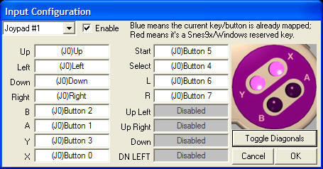
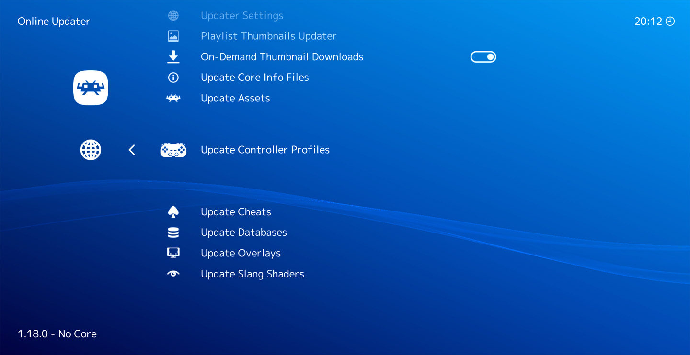

Joypad Auto Configuration¶
How does RetroArch match controllers?¶
When you connect a new controller to RetroArch, the system attempts to automatically configure it by matching it to known profiles. This matching process is crucial for ensuring that your controller works correctly with various games and emulators.
The matching algorithm considers several key factors:
- Controller driver (input_driver): The software interface used to communicate with the controller. To use a specific driver, RetroArch must be configured accordingly by navigating to Settings -> Drivers -> Controller.
- Device Index (input_device): The name of the controller as recognized by the system. The Device Index can be identified by navigating to Settings -> Input -> RetroPad Binds -> Port 1 Controls.
- Vendor ID (input_vendor_id): A unique identifier assigned to the controller's manufacturer.
- Product ID (input_product_id): A specific identifier for the particular controller model.
RetroArch evaluates each of these factors against its database of controller profiles. It then calculates a matching score for each profile, with the highest-scoring profile being selected to configure the controller.
RetroArch automatically utilizes the linuxraw driver, which operates differently than other drivers by providing only a device name instead of Vendor ID (VID) and Product ID (PID) information. This means that controller matching with the linuxraw driver depends primarily on the device name (Device Index), accessed through the JSIOCGNAME ioctl command, rather than the typical vid:pid identifiers.
It's worth noting that the Vendor ID and Product ID pair is often abbreviated as "vid:pid" in technical discussions.
This matching system allows RetroArch to support a wide range of controllers while minimizing the need for manual configuration in most cases.
Why is it needed?¶
RetroArch works many platforms. Each of these platforms has one or more input systems. These input systems in turn differ widely in the way they enumerate the pad buttons. For this reason, your joypad buttons may be mapped differently depending on if you are using Windows, Mac, or Linux.
Traditional emulators allow you map each button of your pad to the original pad of the emulated system. For example, this is how the Snes9x joypad configuration interface looks:

RetroArch also allows this kind of manual mapping. However, RetroArch tries to go further by detecting your joypad and automatically configuring it so manual configuration becomes obsolete.
Benefits¶
With RetroArch joypad auto-configuration system, your joypad will be recognized and will work out of the box.
This allows:
- Use many different joypads and have them attributed to each players like it would work on a real game console.
- Unplug the second joypad, and replace it by another one, even if it's of a different brand and model.
Having automatically configured joypads makes it a lot easier to navigate the RetroArch Menu with the joypad. This is very convenient when running RetroArch on a game console, where a keyboard and a mouse are not always available. It is also what makes RetroArch suitable to build your own game console using Lakka or a similar OS.
Before you begin¶
Make sure that you run the latest version of RetroArch, to generate a file name and file content via Settings -> Input -> RetroPad Binds -> Port 1 Controls -> Save Controller Profile that is up to date with our current policies.
Change the Controller Profiles Directory to make it accessible for non-root users¶
Both Flatpak and Android versions require adjusting the Controller Profiles Directory for essential functionality and proper operation.
Android configuration¶
Challenge¶
Most Android devices aren't rooted, and RetroArch's default autoconfig directory requires root access. This leads to two problems:
* Users can't save custom profiles through Settings -> Input -> RetroPad Binds -> Port 1 Controls -> Save Controller Profile.
* Restricted File Access: Users can update controller profiles through Main Menu -> Online Updater -> Update Controller Profiles. However, they cannot read these files stored in /data/user/0/com.retroarch/autoconfig. Unlike GNU/Linux systems, Android's security model is designed to prevent non-root users from reading certain files or gaining root access. This limitation makes it impossible for users to compare the updated profiles with their custom-generated controller files, significantly impeding effective profile management and customization.
Resolution¶
- Create the directory
/storage/emulated/0/RetroArch/autoconfig/android - In RetroArch, navigate to
Settings->Directory->Controller Profilesfrom the default value/data/user/0/com.retroarch/autoconfig(root) to/storage/emulated/0/RetroArch/autoconfig. TheSettings->Input->RetroPad Binds->Port 1 Controls->Save Controller Profilestep above will now save the Android autoconfig files in/storage/emulated/0/RetroArch/autoconfig/android
Flatpak configuration¶
Challenge¶
The default autoconfig directory in Flatpak RetroArch requires root access, preventing users from:
* Downloading and extracting profiles via Main Menu -> Online Updater -> Update Controller Profiles.
* Saving custom profiles through Settings -> Input -> RetroPad Binds -> Port 1 Controls -> Save Controller Profile.
Resolution¶
To address this issue, configure RetroArch as follows:
- Enable Hidden File Visibility
- Navigate to
Main Menu -> Load Content -> File Browser -
Enable the option
Show Hidden Files and Directories -
Modify Controller Profiles Directory
- Go to
Settings -> Directory -> Controller Profiles - Change the directory from the default
/app/share/libretro/autoconfigto/home/youruser/.var/app/org.libretro.RetroArch/config/retroarch/autoconfig.
Note: The actual path of the default directory is: /var/lib/flatpak/app/org.libretro.RetroArch/current/active/files/share/libretro/autoconfig/
By implementing these changes, you'll be able to create and save custom controller profiles without requiring root privileges.
Installing or updating joypad profiles¶

The set of joypad profiles used by RetroArch can be downloaded and updated from the menu. Go to Main Menu -> Online Updater -> Update Controller Profiles to get the latest version of the profile pack.
A message will appear at the bottom of the screen showing the download progress and the extraction of the archive.
Generating a joypad profile¶
If your joypad is not recognized by RetroArch even after updating the profiles, you can generate a profile from the menu.
- To avoid other controllers from interfering with your mapping when starting RetroArch, follow these steps: Disconnect all joypads by unplugging their cables or disconnecting them from any wireless connections.
- Connect the controller intended for autoconfiguration. Ensure your system supports the selected connectivity method. If your joypad supports both wired and wireless connections and the initial attempt (e.g., via USB) fails, try the alternative option (e.g., Bluetooth). For example, the Nintendo Switch Pro Controller does not support USB connection on Linux 5.15 and older but does support Bluetooth.
- For Android, run the Android steps first.
- Use
Settings->Input->RetroPad Binds->Port 1 Controls->Set All Controls. If automatic mapping fails for any button (e.g., due to lack of driver support), the process will be interrupted. In case of interruption, manually map the remaining buttons, starting from the one that caused the interruption and continuing through the rest of the list. - If applicable, then also set the menu button binding in
Settings->Input->Hotkeys->Menu Toggle - Use
Settings->Input->RetroPad Binds->Port 1 Controls->Save Controller Profile - The new profile file (also known as the autoconfig file) will be saved to your disk: [Controller profile directory]/[Controller driver]/[Device index].cfg.
- For analog L2/R2 triggers (pressure-sensitive triggers) you must manually edit the autoconfig file (see the Analog L2/R2 remapping section) due to a bug in RetroArch.
Analog L2/R2 remapping¶
RetroArch has a bug(ref1, ref2) that causes analog L2/R2 triggers to be incorrectly mapped as digital buttons instead of analog axes when configuring controls through the UI. This affects pressure-sensitive triggers on controllers like PlayStation 2 and later, making some games unplayable due to the lack of analog input.
To work around this issue, you need to manually edit the RetroArch config file to set the correct analog axis mappings for L2 and R2. Here's how to find the proper axis values:
- Install and run jstest avalible for GNU/Linux, and Windows.
- In GNU/Linux: jstest /dev/input/js0
- Slowly press L2 and R2 to identify which axis numbers change
- Note the axis numbers that correspond to L2 and R2
- In the autoconfig file, set:
input_l2_axis = "+X" (where X is the L2 axis number) input_r2_axis = "+Y" (where Y is the R2 axis number)
For example, if L2 is axis 2 and R2 is axis 5, you would set:
input_l2_axis = "+2"
input_r2_axis = "+5"
This manual configuration allows the analog triggers to work properly until the bug in RetroArch's control mapping UI is fixed.
Inspect the file¶
Without modifying anything in the original file, open it in the file in a text editor and
1. Make sure that you have mapped all buttons, and that none of them have duplicated values.
2. Each button should have a variable that ends with _btn, or _axis, not both. So for example, if you find both input_a_axis, and input_a_btn, it's incorrect. This may happen if your OS does not support the controller.
Before giving up and saving the controller again, you can attempt to re-map any missing buttons. However, please refrain from manually modifying the variables unless it's absolutely necessary due to bugs in RetroArch. If you plan to submit your profile to our joypad profile repository, we depend on automated data for debugging the autoconfig files.
Try the controller¶
- If the controller support Bluetooth, make sure that that there's no Bluetooth latency.
- Make sure that your mapping is perfect by testing every button in the menu.
- To verify all controller mappings:
Main Menu->Load Core->Start Remote RetroPad. Press each button once; icons change white to light green permanently if they are mapped correctly. If icons remain white, try to remap them. Ensure no white buttons remain. Evaluate analog trigger responsiveness for L2 and R2. As you slowly apply pressure, a black rectangle should appear in the center of each button and gradually fade as the pressure increases. Ensure you press the triggers slowly to observe the visual feedback accurately. For Android smartphones and other devices with small displays, hold the screen closer to your eyes. This will help you see the subtle rectangle indicator, which can be difficult to spot at normal viewing distances on compact screens. - Try a game in a core that uses all mappings on your controller. After you have loaded the game it's possible that you have to change the native controller to your controller in
Quick Menu->Settings->Input->RetroPad Binds->Port 1 Controls->Device Index-- for example if you want to use both thumbsticks you have to changePS1toDualShockin PlayStation cores. If it's difficult for you to find a game that uses all buttons, you can setSettings->Input->Hotkeys(for example Save state, Load state, Fastforward, and Rewind) for unused buttons, so you can evaluate all mappings. - Use
Settings->Inputs->Port 1 Controls->Reset to Default Controlsto clear manual bindings and rely on the new profile. - Unplug your joypad an re-plug it. See if it is auto configured.
Warning "Clear manual bindings"
It is important to to skip the step of clearing manual bindings after using the Save Controller Profile command. In order to avoid issues using your profile in the future, remember to go to Settings -> Input -> RetroPad Binds -> Port 1 Controls -> Reset to Default Controls to reset the manual settings before completing this process.
If you are happy with your profile, you can submit it to RetroArch so that other users benefit:
- Edit the autoconfig file for your joypad manually to include the input descriptors (please see the Input descriptors section below)
- Submit your profile to our joypad profile repository.
Default-off configs¶
When developing controller configurations, it's essential to anticipate and mitigate potential conflicts. These issues often arise in the following situations:
- When multiple autoconfig files exist for a single device, causing confusion in the system. This primarily occurs with controllers that require different configurations based on kernel versions. For example, the Nintendo Switch Pro Controller on Linux, where older kernels necessitate a different button mapping compared to newer kernels.
- With unlicensed controllers that mimic the vendor ID and product ID of official controllers but require their own specific autoconfig because they only partially emulate the original device's mappings. For example, the Data Frog P02 mimics a PlayStation 4 controller's vendor ID and product ID, but features a different input_menu_toggle_btn value, necessitating a unique configuration.
Here's how to set up a default-off configuration:
- Append "(default-off)" to the configuration filename.
- Comment out the
input_vendor_idandinput_product_idlines in the config file. - Do not add "(default-off)" to the values of the input_device_display_name and input_driver variables in the config file. The default-off status is already indicated by the filename, so these variables should remain unmodified for clarity.
This approach allows users to manually enable the configuration when needed, preventing automatic application that could interfere with common devices, and helps ensure a smoother experience for users while still providing the necessary configuration options for those who require them.
Device Index scheme for autoconfig files¶
In RetroArch, the management of controller configurations is essential for ensuring proper functionality across various systems. This guide outlines how the Device Index are generated and how they can vary based on the Linux kernel version in GNU/Linux distributions.
Understanding the Device Index¶
RetroArch identifies physical controllers through a system called the Device Index. You can locate this identifier by navigating to:
Settings > Input > RetroPad Binds > Port 1 Binds > Device Index
The Device Index plays a crucial role when saving a controller profile. To save a profile, follow this path:
Settings > Input > RetroPad Binds > Port 1 Controls > Save Controller Profile
Dual function of the Device Index¶
When you save a controller profile, the Device Index serves two important purposes:
-
Configuration File Naming: It becomes an integral part of the configuration file's name. For example, if the Device Index is "Foo", the configuration file might be named "udev/Foo.cfg".
-
Input Device Identification: Within the configuration file itself, the Device Index is used as the value for the
input_devicevariable. Following our example, you would see a line like this in the file:
input_device = "Foo"
This dual functionality ensures that RetroArch can correctly identify and apply the appropriate settings for each unique controller.
Importantly, this name remains consistent across various controller drivers, such as udev, sdl2, and linuxraw, as specified in Settings > Drivers > Controller.
Variability of the Device Index¶
The Device Index may change depending on the version of the system, particularly the Linux kernel version. To ensure compatibility, we utilize the most recent Device Index that is supported by the system.
Example: Nintendo Switch Pro Controller on GNU/Linux¶
The following table illustrates how the Device Index for the Nintendo Switch Pro Controller varies across different Linux kernel versions, along with its HID support and corresponding autoconfig file names. As a side-note, the notation "(default-off)" indicates that the configuration is disabled by default to avoid
| Linux Kernel Version | Device Index in RetroArch | Nintendo Switch Pro Controller HID Support | Selected Device Index for the autoconfiguration file |
|---|---|---|---|
| 5.15 | Pro Controller | No | Pro Controller |
| 5.19 | Nintendo Switch Pro Controller | Yes | |
| 6.2.0 | Nintendo Switch Pro Controller | Yes | |
| 6.8.0 | Nintendo Co., Ltd. Pro Controller | Yes | Nintendo Co.,Ltd. Pro Controller |
Configuration file examples¶
Pro Controller (default-off).cfg¶
# This file uses the legacy Device Index "Pro Controller" (generated by RetroArch on Linux 5.15)
# "(default-off)" was added to the file name to indicate that the autoconfig file is not active by default. See comments for input_vendor_id and input_product_id.
input_device = "Pro Controller"
# Due to the uncommon nature of this device, the autoconfig file is not active by default. This precaution is taken to avoid potential conflicts with the widely-used Nintendo Switch Pro Controller (nintendo-hid version) file. Button layouts are not compatible. To activate this configuration:
# 1) Comment out the input_vendor_id and input_product_id lines in the "Nintendo Co.,Ltd. Pro Controller.cfg" file.
# 2) Uncomment the input_vendor_id and input_product_id lines below:
# input_vendor_id = "1406"
# input_product_id = "8201"
Nintendo Co.,Ltd. Pro Controller.cfg¶
input_device = "Nintendo Co.,Ltd. Pro Controller"
input_vendor_id = "1406"
input_product_id = "8201"
Troubleshooting¶
If your joypad is not configured properly, you should generate a RetroArch log. Your log will show if a profile has been matched for your pad and the path of the corresponding profile.
Joypad auto-configuration file¶
Metadata¶
The first part of the joypad profile is used for matching the profile with the device, as explained above. The Vendor ID and Product ID are in decimal format.
input_driver = "udev"
input_device = "Sony Interactive Entertainment DualSense Edge Wireless Controller"
input_vendor_id = "1356"
input_product_id = "3570"
Mapping¶
The second part is the mapping itself, where each button is assigned to a button of the RetroPad (the joypad abstraction of RetroArch).
Example
input_b_btn = "0"
input_y_btn = "2"
input_select_btn = "6"
input_start_btn = "7"
input_up_btn = "h0up"
input_down_btn = "h0down"
input_left_btn = "h0left"
input_right_btn = "h0right"
input_a_btn = "1"
input_x_btn = "3"
input_l_btn = "4"
input_r_btn = "5"
input_l2_axis = "+2"
input_r2_axis = "+5"
input_l3_btn = "9"
input_r3_btn = "10"
input_l_x_plus_axis = "+0"
input_l_x_minus_axis = "-0"
input_l_y_plus_axis = "+1"
input_l_y_minus_axis = "-1"
input_r_x_plus_axis = "+3"
input_r_x_minus_axis = "-3"
input_r_y_plus_axis = "+4"
input_r_y_minus_axis = "-4"
input_menu_toggle_btn = "8"
Note: These variable values are examples and should not be directly copied to your configuration file.
Overview¶
Axes (analog inputs)¶
- They represent analog inputs from the controller, like joystick position (e.g., left joystick X-axis, right joystick Y-axis) or trigger pressure (e.g., L2 trigger, R2 trigger).
- Variable names (for both mappings and labels) includes
_axisdefine these (e.g.,input_l_x_plus_axis_label,input_r2_axis).
| Console | Controller | Release Date | Analog Thumb Sticks | L2/R2 Analog |
|---|---|---|---|---|
| PlayStation 1 | Sony Dual Analog Controller | April 1997 | Yes | No |
| PlayStation 1 | Sony DualShock | November 1997 | Yes | No |
| PlayStation 2 | DualShock 2 | 2000 | Yes | Yes |
| PlayStation 3 | Sixaxis | 2006 | Yes | Yes |
| PlayStation 3 | DualShock 3 | 2008 | Yes | Yes |
| PlayStation 4 | DualShock 4 | 2013 | Yes | Yes |
| PlayStation 5 | DualSense | 2020 | Yes | Yes |
Mapping variables¶
- Axis definitions use
+and-to indicate positive or negative direction (e.g., full press vs. no press). - The current RetroArch configurations have axis values that ranges from
0to10. However, if RetroArch does not limit the values to10, underlying controller hardware could offer an even wider range.
Mapping variables with analog L2/R2 triggers:
input_l2_axis = "+2"
input_r2_axis = "+5"
Note: These variable values are examples and should not be directly copied to your configuration file.
Label variables¶
The term "Analog" is included in the variable values for the analog inputs to clearly indicate that these inputs are analog in nature.
Labels for analog thumb sticks:
input_l_x_plus_axis_label = "Left Analog X+ (right)"
input_l_x_minus_axis_label = "Left Analog X- (left)"
input_l_y_plus_axis_label = "Left Analog Y+ (down)"
input_l_y_minus_axis_label = "Left Analog Y- (up)"
input_r_x_plus_axis_label = "Right Analog X+ (right)"
input_r_x_minus_axis_label = "Right Analog X- (left)"
input_r_y_plus_axis_label = "Right Analog Y+ (down)"
input_r_y_minus_axis_label = "Right Analog Y- (up)"
Labels for analog L2/R2 triggers:
input_l2_axis_label = "L2 Analog"
input_r2_axis_label = "R2 Analog"
Buttons (digital inputs)¶
- These are defined by variable names ending with
_btn(e.g.,input_a_btn,input_start_btn). - The current RetroArch configurations have button values that ranges from
0to203. However, if RetroArch does not limit the values to203, underlying controller hardware could offer an even wider range. - RetroArch interprets these IDs (usually 1 for pressed, 0 for not pressed) to determine the button state.
D-Pad directions (special digital inputs)¶
- D-pad directions use variable values beginning with
h0(e.g.,input_up_btn = "h0up"). - Four
h0variables exist (h0up,h0down,h0left,h0right) for each direction on the D-pad. - Note: The value
h1is used by a single controller (Nintendo_Wii_Remote_Classic_Controller.cfg).
Input descriptors¶
The third part are input descriptors used by RetroArch to display the labels of the buttons as they are written on your joypad.
Generic input descriptors:
input_b_btn_label = "A"
input_y_btn_label = "X"
input_select_btn_label = "Back"
input_start_btn_label = "Start"
input_up_btn_label = "D-Pad Up"
input_down_btn_label = "D-Pad Down"
input_left_btn_label = "D-Pad Left"
input_right_btn_label = "D-Pad Right"
input_a_btn_label = "B"
input_x_btn_label = "Y"
input_l_btn_label = "LB"
input_r_btn_label = "RB"
input_l2_axis_label = "LT"
input_r2_axis_label = "RT"
input_l3_btn_label = "Left Thumb"
input_r3_btn_label = "Right Thumb"
input_l_x_plus_axis_label = "Left Analog X+ (right)"
input_l_x_minus_axis_label = "Left Analog X- (left)"
input_l_y_plus_axis_label = "Left Analog Y+ (down)"
input_l_y_minus_axis_label = "Left Analog Y- (up)"
input_r_x_plus_axis_label = "Right Analog X+ (right)"
input_r_x_minus_axis_label = "Right Analog X- (left)"
input_r_y_plus_axis_label = "Right Analog Y+ (down)"
input_r_y_minus_axis_label = "Right Analog Y- (up)"
input_menu_toggle_btn_label = "Guide"
Example: Controllers for Sony PlayStation 2 and later¶
Labels for PlayStation controllers starting from PS2. Note that analog L2/R2 triggers (input_l2_axis_label = "L2 Analog", and input_r2_axis_label = "R2 Analog") are featured:
input_b_btn_label = "Cross"
input_y_btn_label = "Square"
input_select_btn_label = "Create"
input_start_btn_label = "Options"
input_up_btn_label = "D-Pad Up"
input_down_btn_label = "D-Pad Down"
input_left_btn_label = "D-Pad Left"
input_right_btn_label = "D-Pad Right"
input_a_btn_label = "Circle"
input_x_btn_label = "Triangle"
input_l_btn_label = "L1"
input_r_btn_label = "R1"
input_l2_axis_label = "L2 Analog"
input_r2_axis_label = "R2 Analog"
input_l3_btn_label = "L3"
input_r3_btn_label = "R3"
input_l_x_plus_axis_label = "Left Analog X+ (right)"
input_l_x_minus_axis_label = "Left Analog X- (left)"
input_l_y_plus_axis_label = "Left Analog Y+ (down)"
input_l_y_minus_axis_label = "Left Analog Y- (up)"
input_r_x_plus_axis_label = "Right Analog X+ (right)"
input_r_x_minus_axis_label = "Right Analog X- (left)"
input_r_y_plus_axis_label = "Right Analog Y+ (down)"
input_r_y_minus_axis_label = "Right Analog Y- (up)"
input_menu_toggle_btn_label = "PS"